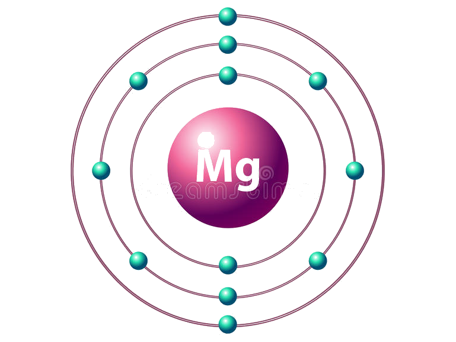

←
→
Magnesium is a chemical element with symbol Mg and atomic number 12. It is a shiny gray solid which bears a close physical resemblance to the other five elements in the second column (group 2, or alkaline earth metals) of the periodic table: all group 2 elements have the same electron configuration in the outer electron shell and a similar crystal structure.
Magnesium is the ninth most abundant element in the universe. It is produced in large, aging stars from the sequential addition of three helium nuclei to a carbon nucleus. When such stars explode as supernovas, much of the magnesium is expelled into the interstellar medium where it may recycle into new star systems. Magnesium is the eighth most abundant element in the Earth's crust and the fourth most common element in the Earth (after iron, oxygen and silicon), making up 13% of the planet's mass and a large fraction of the planet's mantle. It is the third most abundant element dissolved in seawater, after sodium and chlorine.
Magnesium occurs naturally only in combination with other elements, where it invariably has a +2 oxidation state. The free element (metal) can be produced artificially, and is highly reactive (though in the atmosphere, it is soon coated in a thin layer of oxide that partly inhibits reactivity — see passivation). The free metal burns with a characteristic brilliant-white light. The metal is now obtained mainly by electrolysis of magnesium salts obtained from brine, and is used primarily as a component in aluminium-magnesium alloys, sometimes called magnalium or magnelium. Magnesium is less dense than aluminium, and the alloy is prized for its combination of lightness and strength.
Magnesium is the eleventh most abundant element by mass in the human body and is essential to all cells and some 300 enzymes. Magnesium ions interact with polyphosphate compounds such as ATP, DNA, and RNA. Hundreds of enzymes require magnesium ions to function. Magnesium compounds are used medicinally as common laxatives, antacids (e.g., milk of magnesia), and to stabilize abnormal nerve excitation or blood vessel spasm in such conditions as eclampsia.